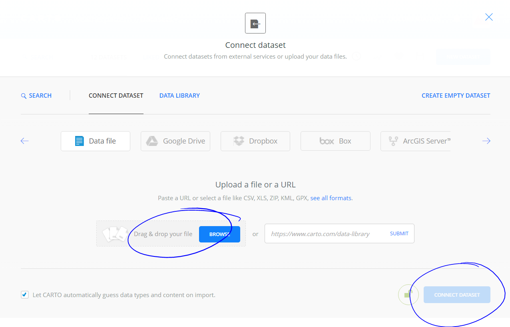
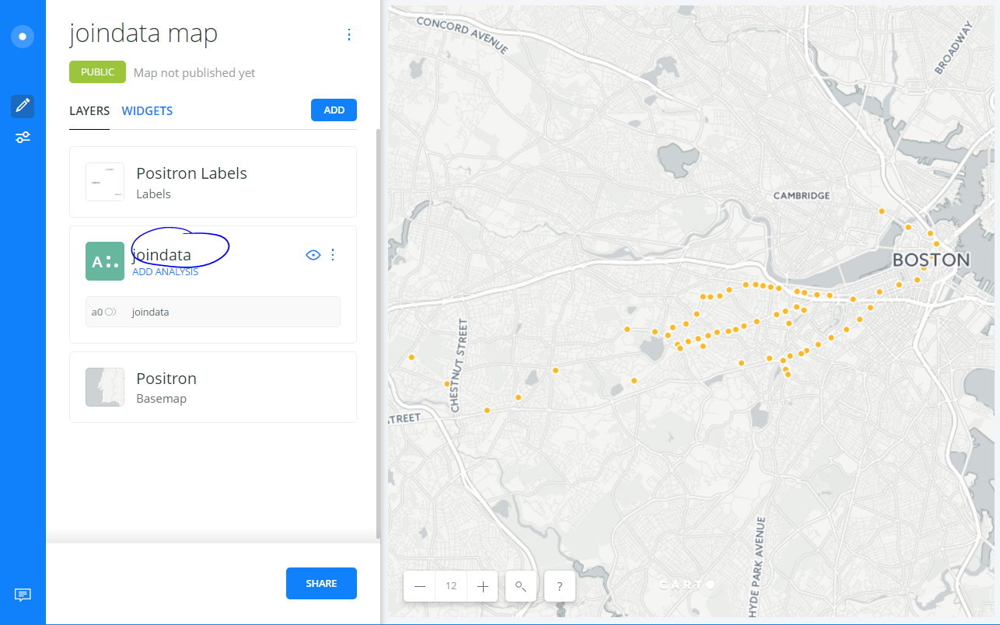
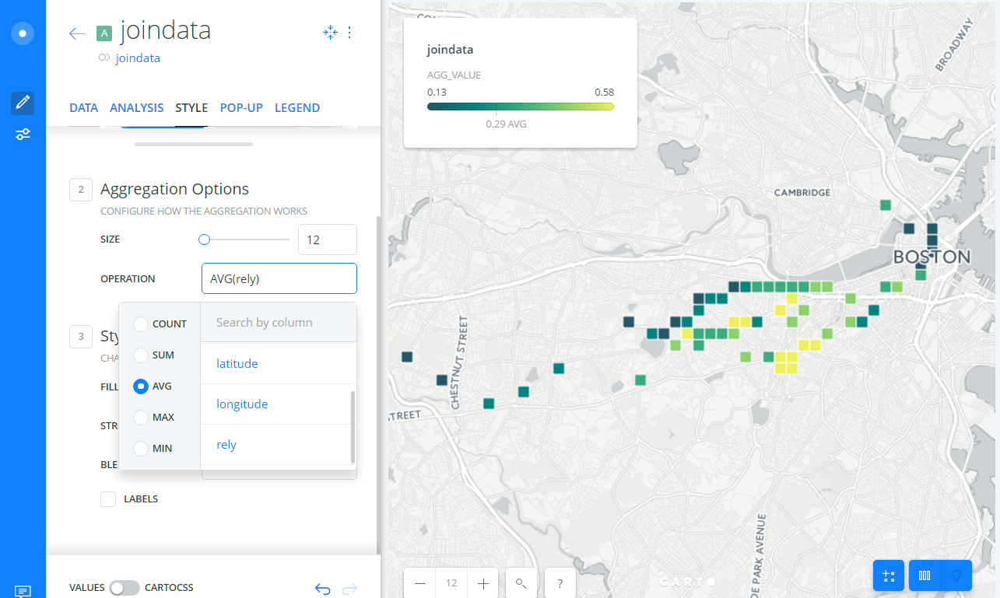
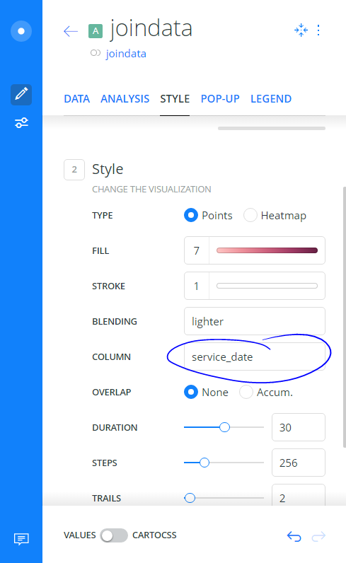
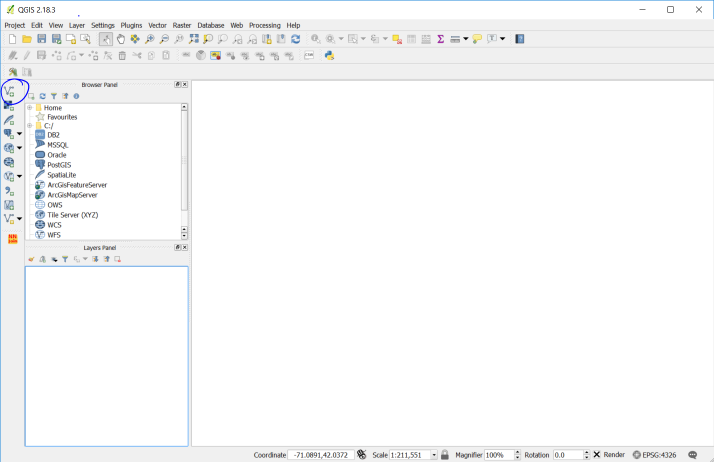
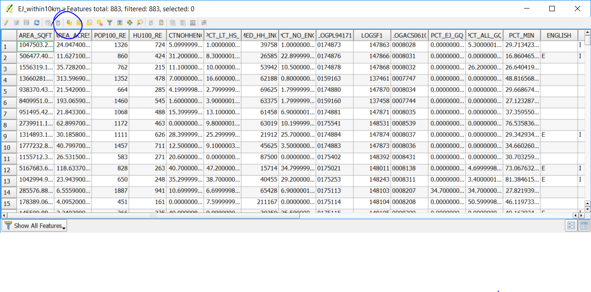
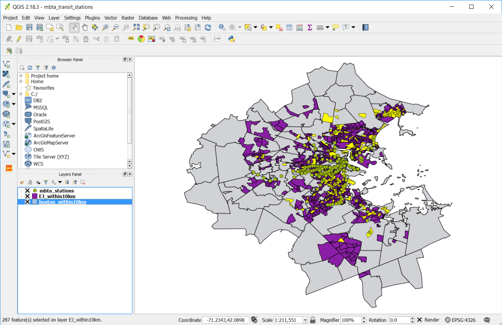

Transit Data Mapping Basics
Maptime Boston - February 15 2007
Where do you expand a station?
MBTA Green Line
New York MTA 2nd Avenue Subway
Getting Data
Kinds of Transit Data
Shapefiles
Historical Archives (e.g. CSV)
Realtime API Datafeed (e.g. GTFS)
Mapping MBTA Green Line's Reliability
Open TDashboardData_reliability_20160801-20160831.xlsx
Or download the data. Note: you must convert it to the a xlsx file.
Open mbta_station.csv
Source is from the MBTA Rapid Transit Station shapefile, with some manual clean up.
Launch R Studio
R Studio Overview

File -> Open File -> greenline_analysis.R

"Run" through each step
Open Carto

Load New dataset
Make A Map
Select avg(rely) and Choose Color
Make Animated Map

under Column: Choose Service Date
Mapping Boston Rapid Transit Station
Who gtes a new station?
Open a new QGIS file
Load Boston Basemap
Open As: boston_within10km.shp
Load Environmental Justice Blocks
Open As: EJ_within10km.shp
Load MBTA Rapid Transit Stations
Open As: mbta_stations.shp
QGIS with Layers

Where is downtown?
What areas are being served and not served?
Environmental Justice Neighborhoods
What are they?
What are their categories?
Layer Panel: Right-click the EJ layer > Open Attribute Layer
Select features using an express
Select by expression > Income = “I”

QGIS -> Edit -> Copy Features
QGIS ->Edit -> Paste Features As... -> New Vector Layer
Select WGS84 Filename: EJ_income_within10km.shp

Low Income Environmental Justice Neighborhoods

Analysis
What are possible relationships to between these blocks and the stations?
Install NNJOIN: QGIS -> Plugins -> Manage and install plugins...

Find Environmental Justics Blocks Near Neighboring MBTA Station
Input vector layer: EJ_income_within10km
Join vector layer: MBTA_NODE_WGS84
Output layer: ej_near_mbta
Map neighborhoods by distance to a station

Create Categories
Right Click -> Layer Properties -> Style ->Graduated:
Select Graduated
Column: distance
Color Ramp: Blues
Mode: Quantile
Examine your Map

Thanks to:
You, Maptime Boston, Eric Brelsford